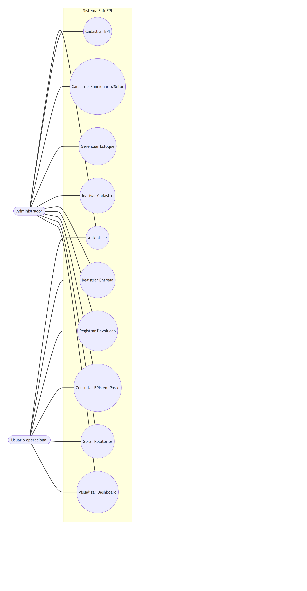
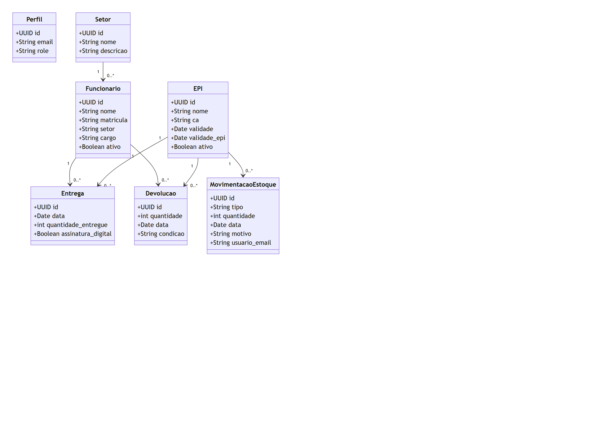
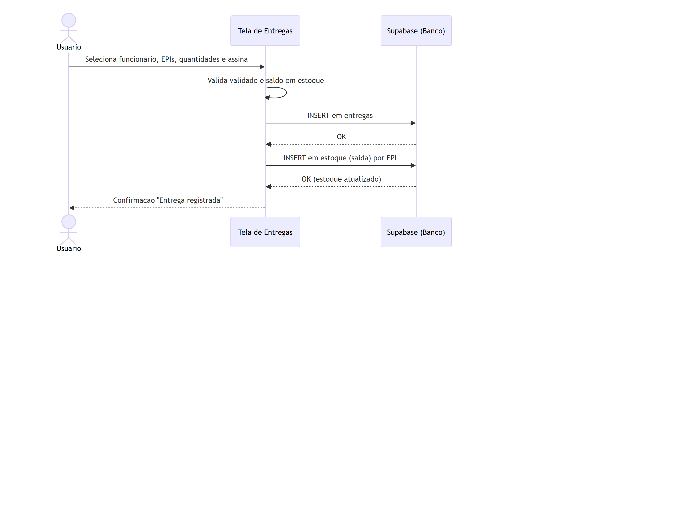
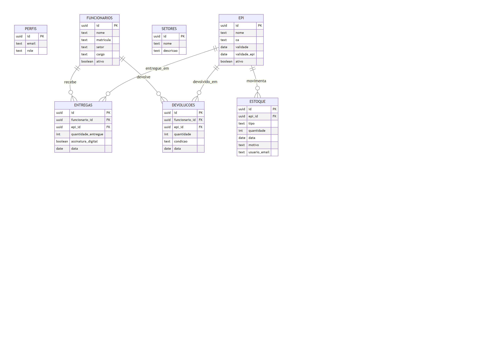

Planejamento, Análise e Design de Software — Solução: SafeEPI
SENAI SC — Joinville Sul · Engenharia de Software · Profª. Mestra Tatiana Aparecida de Almeida · Período: 2026
Situação atual: No SENAI SC Joinville Sul, o controle de EPIs é feito de forma manual, com planilhas de papel e registros avulsos. Cada entrega de equipamento a funcionários e visitantes é anotada à mão, sem um sistema central que relacione o equipamento, a pessoa, a data e o responsável. O estoque é conferido visualmente, sem atualização automática quando um EPI é entregue ou devolvido, e não há acompanhamento das validades (CA e do próprio equipamento).
Principais problemas identificados:
O controle manual de EPIs no SENAI Joinville Sul, baseado em planilhas de papel, impede a rastreabilidade de quem está com cada equipamento e o controle do estoque e das validades em tempo real, comprometendo a segurança dos usuários e a eficiência operacional.
| Perfil | Papel no sistema |
|---|---|
| Administrador (almoxarife / gestor de segurança) | Cadastra EPIs, funcionários e setores; gerencia estoque (entradas/baixas); acessa tudo. |
| Usuário operacional | Registra entregas e devoluções, consulta EPIs em posse e gera relatórios. |
| Funcionário / Visitante | Recebe os EPIs e assina o recibo digital (não acessa o sistema diretamente). |
| Gestão / Coordenação | Consome dashboard e relatórios para decisão. |
| Código | Descrição |
|---|---|
| RF01 | O sistema deve permitir o cadastro de EPIs com nome, CA, validade do CA e validade do próprio equipamento. |
| RF02 | O sistema deve permitir o cadastro de funcionários com nome, matrícula, setor e cargo. |
| RF03 | O sistema deve registrar a entrega de EPIs a funcionários, com data, quantidade e assinatura digital, dando baixa automática no estoque. |
| RF04 | O sistema deve registrar a devolução de EPIs, repondo o estoque automaticamente quando o item for reutilizável. |
| RF05 | O sistema deve manter o histórico de movimentações de estoque (entradas, saídas e baixas). |
| RF06 | O sistema deve informar quais EPIs cada funcionário possui no momento (entregue − devolvido). |
| RF07 | O sistema deve emitir alertas de estoque baixo/zerado e de validades próximas do vencimento. |
| RF08 | O sistema deve gerar relatórios de movimentação por período e exportá-los em PDF. |
| RF09 | O sistema deve controlar o acesso por login/senha e por perfil (administrador/usuário). |
| RF10 | O sistema deve permitir a inativação (exclusão lógica) de EPIs e funcionários, preservando o histórico. |
| Código | Descrição |
|---|---|
| RNF01 | Segurança: proteger os dados com autenticação e políticas de acesso no banco (RLS), restringindo escrita a usuários autorizados. |
| RNF02 | Usabilidade: interface responsiva (desktop e mobile) e intuitiva, com navegação por menu lateral. |
| RNF03 | Desempenho: as consultas e telas devem carregar em poucos segundos sob uso normal. |
| RNF04 | Disponibilidade: o sistema deve ser acessível via web (nuvem), com backend gerenciado (Supabase). |
| RNF05 | Manutenibilidade: código modular (componentes/views) e banco versionado por migrações SQL. |
| RNF06 | Auditoria: ações sensíveis (baixa de estoque) registram o responsável e exigem reconfirmação de senha. |
Login com perfis; cadastro de EPIs com validade CA/EPI; cadastro de funcionários e setores; controle de estoque (entrada/saída/baixa); baixa protegida por senha; entrega de múltiplos EPIs com assinatura digital; baixa automática de estoque na entrega; devolução com reposição (reutilizável/descarte); consulta de EPIs em posse por funcionário; alertas de validade e estoque mínimo; dashboard com KPIs e gráficos; rankings de funcionários/EPIs; relatórios com filtros e exportação em PDF; inativação lógica; controle de acesso admin/usuário; PDF comercial com números do sistema.
Tela 1 — Login: fundo azul com gradiente, logo e nome "SafeEPI", subtítulo do sistema; card central com campos de e-mail e senha (com ícones), botão "Acessar Sistema" e mensagem de erro para credenciais inválidas. Layout responsivo.
Tela 2 — Cadastro de EPIs: formulário com nome do EPI, nº do CA, validade do CA e opção "tem validade própria?" (mostra campo de data condicional). Abaixo, tabela dos EPIs cadastrados com nome, CA, validades, status (válido/vencido) e ações (editar, inativar). Busca por nome e opção de mostrar inativos.
Tela 3 — Movimentação (Entrega/Devolução): na entrega, seleciona-se o funcionário e a data, marca-se vários EPIs numa lista (com saldo e status de validade), informa-se a quantidade e confirma-se a assinatura digital; o estoque baixa automaticamente. Na devolução, ao escolher o funcionário aparecem só os EPIs que ele tem em posse; escolhe-se o EPI, a quantidade e a condição (reutilizável → volta ao estoque; descarte).
Tela 4 — Consultas e Relatórios: filtros por período, funcionário, EPI e CA; tabela de resultados com validade, quantidade e assinatura; botões de imprimir e exportar PDF. O Dashboard complementa com KPIs (saldo, posse, vencidos), alertas, gráficos (pizza/barras/linha) e rankings.
[Anexar aqui os protótipos visuais — prints reais das telas do sistema rodando.]




Pontos positivos identificados (sugeridos — validar com um colega):
Pontos de melhoria identificados (sugeridos):
EPIS_NEW/
├── docs/ # Documentação gerada (PDF/Word/HTML)
├── public/ # Arquivos estáticos
├── migracoes.sql # Migrações do banco (Supabase)
├── migracoes_02_inativacao.sql
├── migracoes_03_devolucao.sql
├── migracoes_04_perfis_rls.sql
├── index.html
├── package.json
├── vite.config.js
└── src/
├── App.vue
├── main.js
├── assets/ # Imagens e CSS (logoEPI.jpg, main.css)
├── components/ # applayout.vue, menu.vue, footer.vue
├── composables/ # useSupabase.js (cliente + sessão + papel)
├── router/ # index.js (rotas + proteção por perfil)
├── utils/ # pdfComercial.js
└── views/ # Telas do sistema
├── login.vue
├── home.vue
├── dashboard.vue
├── epi.vue
├── funcionario.vue
├── setor.vue
├── estoque.vue
├── entrega.vue
├── devolucao.vue
├── posse.vue
└── relatorio.vue
Stack: Vue 3 + Vite (front-end) · Supabase/PostgreSQL (back-end, autenticação e RLS) · Chart.js · jsPDF.
Repositório (GitHub): [cole o link aqui]
Aplicação (Deploy): [cole o link aqui]
Esta atividade mostrou na prática como as etapas iniciais da Engenharia de Software — planejamento, análise e design — sustentam a implementação. Levantar os requisitos e prototipar antes de codificar evitou retrabalho e deixou claro o que o sistema precisava entregar. A maior dificuldade foi traduzir as regras de negócio (saldo de estoque, "EPIs em posse", devolução com reposição) em um modelo de dados coerente. Em um próximo projeto, eu investiria mais cedo nos diagramas UML e na validação com usuários antes de começar a programar.
[Revise e reescreva com suas próprias palavras.]
Declaro que desenvolvi esta atividade de forma individual ou (grupo / projeto integrador) e autônoma, conforme as orientações da disciplina de Engenharia de Software, respeitando os princípios éticos e acadêmicos.
Nome completo:
Matrícula:
Data: ____/____/______
Assinatura: